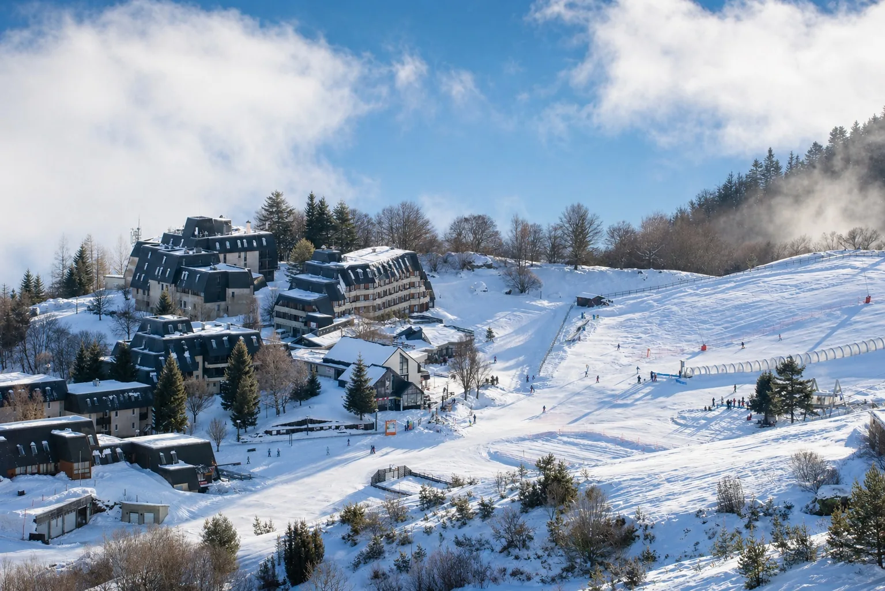

👨👩👧👦
Station familiale
Val Louron est connue pour une approche rassurante, conviviale et adaptée aux familles. Le bien doit donc valoriser la simplicité, le calme, les équipements et les usages concrets.
À Val Louron, une location saisonnière ne doit pas être présentée comme un simple logement en station. La promesse repose sur une station familiale, des déplacements faciles, un accès rassurant aux pistes, une connexion directe avec la vallée du Louron, Loudenvielle, Balnéa et Peyragudes. LocPilot aide les propriétaires à rendre cette valeur plus claire, plus visible et mieux structurée en ligne.
Val Louron ne raconte pas la même histoire que Loudenvielle ou Peyragudes. Le propriétaire doit clarifier ce que le bien permet concrètement : départ ski facile, proximité de l’espace débutants, calme, vue, accès court, séjour avec enfants, été nature et complémentarité avec la vallée.
Val Louron est connue pour une approche rassurante, conviviale et adaptée aux familles. Le bien doit donc valoriser la simplicité, le calme, les équipements et les usages concrets.
La promesse de déplacements courts, faciles et sécurisés est un vrai argument pour les familles. Elle doit être expliquée clairement dans la présentation du logement.
Pour un séjour avec enfants ou skieurs occasionnels, l’accès à un espace débutants lisible, sécurisé et proche du front de neige devient un levier de décision important.
Les vues sur la vallée, les sommets et les pistes donnent de la valeur au bien. Elles doivent être montrées, nommées et reliées à l’expérience du séjour.
Val Louron n’est pas uniquement une destination neige : randonnée, VTT, télésiège estival, Col d’Azet et nature renforcent la logique quatre saisons.
Le logement doit aussi être relié à Loudenvielle, au lac de Génos-Loudenvielle, à Balnéa, à Peyragudes et aux villages de la vallée pour mieux situer la promesse.

Les chiffres et repères ne remplacent pas l’analyse du bien, mais ils aident à comprendre la promesse locale à mettre en avant pour mieux convaincre les voyageurs.
Le site officiel de Val Louron présente la station comme une station sans voiture, pensée pour des déplacements courts, faciles et sécurisés.
Source Val LouronPyrénées2vallées indique 22 pistes, 10 remontées mécaniques, 50 canons à neige et un vaste espace débutants en front de neige.
Source Pyrénées2valléesL’office de tourisme présente la vallée du Louron comme un ensemble de 15 villages labellisés Pays d’Art et d’Histoire et Grand Site Occitanie.
Source Vallée du LouronBalnéa, le lac de Génos-Loudenvielle et les services de vallée renforcent la valeur du séjour pour les familles, les courts séjours et le bien-être.
Source LoudenviellePyrénées2vallées signale aussi les parcours ludiques de VTT et l’ouverture du télésiège des Myrtilles pour la randonnée en été.
Source Pyrénées2valléesL’INSEE indique 47,2 millions de nuitées estivales en Occitanie en 2025 et une progression de la fréquentation dans les Pyrénées.
Source INSEELe voyageur doit comprendre rapidement si le logement correspond à son usage : famille avec enfants, skieurs débutants, séjour au calme, logement proche des pistes, accès piéton, parking, casier, vue, été randonnée ou base de séjour entre Loudenvielle, Peyragudes et la vallée.
La station attire par sa simplicité. Le vrai sujet consiste à traduire cette simplicité dans la présentation du bien, le parcours de réservation et les preuves visibles données au voyageur.
Pied de pistes, front de neige, accès débutants, distance aux services, parking ou montée vers la station : chaque précision réduit les hésitations.
Couchages, rangement, équipements enfants, confort après ski, sécurité des accès et simplicité du séjour doivent être présentés de manière très concrète.
Vue, accès, extérieur, front de neige, pièces de vie, couchages et ambiance montagne doivent aider le voyageur à se projeter sans ambiguïté.
Un canal direct bien cadré peut expliquer l’expérience, rassurer le voyageur et compléter les plateformes sans faire porter à LocPilot les encaissements ni les décisions d’exploitation.
Une station familiale demande une lecture fine des périodes, des prix, des séjours courts, des vacances scolaires et du niveau de confort attendu.
Les couchages, jeux, sécurité, cuisine, accès, casiers, stationnement et équipements enfants peuvent devenir des arguments décisifs.
LocPilot n’agit pas comme une agence immobilière ou une conciergerie encaissant les réservations. L’accompagnement porte sur la visibilité, la structuration, les outils, les contenus et la cohérence du parcours de réservation.
Travailler les requêtes locales : Val Louron, vallée du Louron, station familiale, location pied de pistes, Loudenvielle, Peyragudes et séjour montagne.
Créer une lecture visuelle premium : accès, vue, front de neige, intérieur, volumes, environnement, saison et proximité des activités.
Structurer calendriers, réservations, moteur de réservation ou synchronisation selon l’écosystème choisi par le propriétaire.
Comparer les périodes, les nuits, la saison hiver, l’été, la dépendance OTA et les leviers de progression sans promesse de résultat automatique.
Un support clair peut mieux présenter l’expérience familiale, les équipements, l’accès station et les raisons de réserver en direct.
LocPilot accompagne la visibilité, la structuration et les outils, sans se substituer au propriétaire sur l’exploitation du bien.
L’objectif est de relier Val Louron aux destinations voisines les plus pertinentes, tout en guidant le propriétaire vers les bons leviers : visibilité locale, canal direct, outils et cadre opérationnel.
Replacer Val Louron dans la stratégie globale des destinations montagne, familles, ski doux et quatre saisons du département.
Lire la page 65Relier Val Louron à la vallée du Louron, au lac, à Balnéa, au Skyvall, aux services et aux séjours quatre saisons.
Voir LoudenvielleConnecter Val Louron à Peyragudes, au ski, au VTT, au Skyvall et à une lecture plus sportive de la vallée du Louron.
Voir PeyragudesComparer Val Louron avec la vallée d’Aure : village, thermalisme, station, services, familles et séjours montagne.
Voir Saint-LaryRelier Val Louron à une station d’altitude voisine, avec neige, haute montagne, ski et séjours hiver plus marqués.
Voir Piau-EngalyVoir comment un bien peut être mieux compris par Google, les voyageurs et les moteurs IA.
Lire le guide SEO/GEOStructurer un canal complémentaire aux OTA, sans confusion ni promesse excessive.
Lire le guide directSynchroniser calendriers, canaux, prix et messages sans perdre en clarté opérationnelle.
Lire le guide outilsComprendre le périmètre d’intervention LocPilot et les responsabilités qui restent côté propriétaire.
Lire la FAQOui. Val Louron fait partie des localités stratégiques de la vallée du Louron pour LocPilot, notamment pour les biens en station, les logements familiaux, les appartements pied de pistes et les biens associés aux séjours montagne quatre saisons.
Parce que Val Louron ne raconte pas la même promesse que Loudenvielle ou Peyragudes. La station met en avant une logique familiale, sans voiture, rassurante, avec un espace débutants, des hébergements proches des pistes et une forte connexion à la vallée du Louron.
Oui, si le bien correspond à cette cible. Val Louron doit être présentée avec des repères concrets : accès aux pistes, sécurité des déplacements, espace débutants, calme, vue, stationnement, équipements enfants, proximité de Loudenvielle, Balnéa et Peyragudes.
Oui, en complément des plateformes. Un canal direct bien cadré peut aider à mieux expliquer l’expérience familiale, la localisation exacte, les équipements, les accès et les usages saison par saison, sans remplacer les responsabilités du propriétaire.
Non. LocPilot ne garantit ni les réservations, ni la position Google, ni la validation d’une fiche par Google. L’accompagnement vise à améliorer la lisibilité, la cohérence, la visibilité locale et la qualité du dispositif digital.
Faisons un premier point sur votre bien, votre emplacement, votre présence actuelle, vos canaux et les leviers les plus pertinents pour mieux raconter l’expérience voyageur.